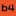
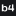
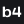

Actual-size favicon proofs
Fixed CSS sizes at 100% browser zoom. These examples use the included PNG exports.
16 px / relay24 px / relay32 px / relay
16 px / tight-shift24 px / tight-shift32 px / tight-shift
16 px / dark
24 px / dark32 px / dark